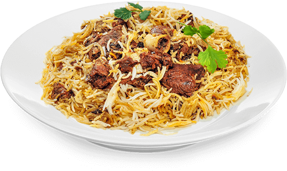

~:KHAN RESTAURANT:~
Teste the Royal Flavors
~:MUTTON BIRYANI:~
Ingredients
-
Basmati rice – 500 g
- Mutton (goat meat) – 500 g (cut into pieces)
- Onions – 2 large (sliced)
- Tomatoes – 2 medium (chopped)
- Yogurt – 1 cup
- Ginger garlic paste – 2 tbsp
- Green chilies – 4 (chopped)
- Fresh coriander leaves – ½ bunch (chopped)
- Mint leaves – ½ bunch (chopped)
- Turmeric powder – ½ tsp
- Red chili powder – 1 tbsp
- Coriander powder – 1 tsp
- Garam masala powder – 1 tsp
- Whole spices (2–3 cloves, 2 cardamoms, 1 cinnamon stick, 1 bay leaf)
- Salt – as needed
- Oil or ghee – ½ cup
- Saffron or yellow food color – ¼ tsp (mixed in 2 tbsp milk)
Go To Starters